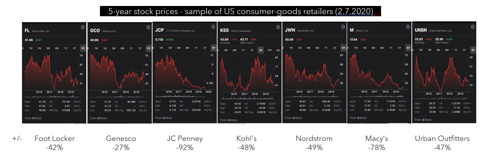
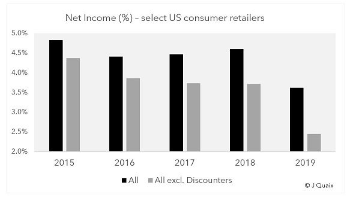
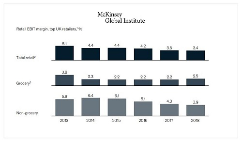
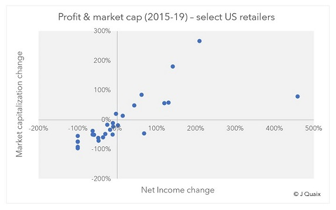
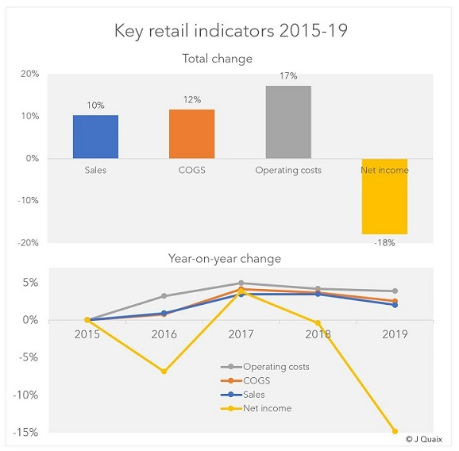
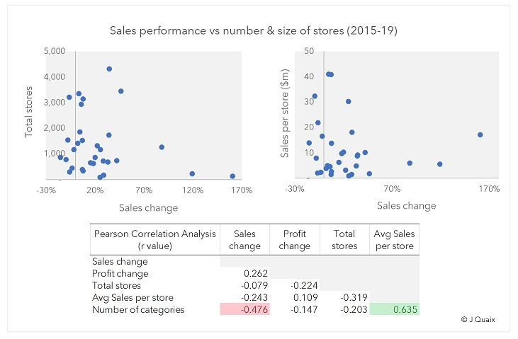
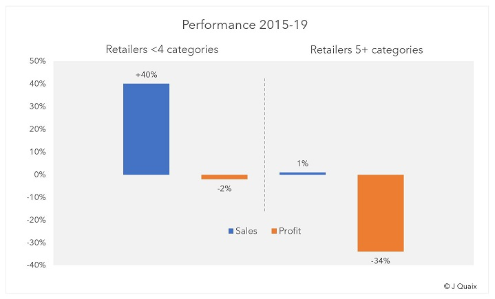
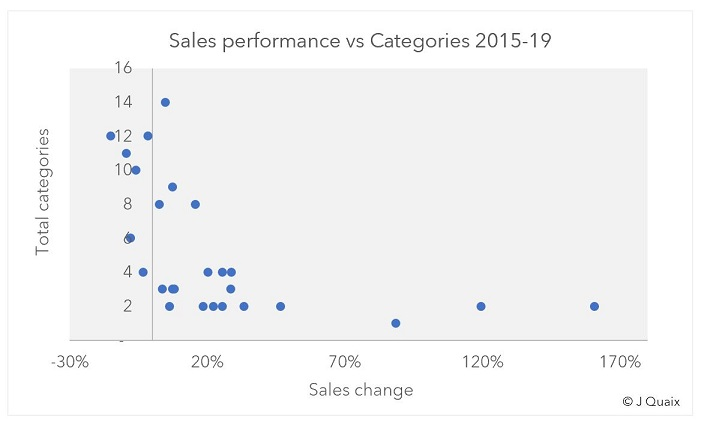
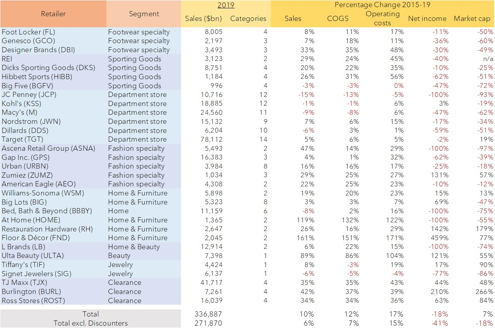

Decrypting the Retail Apocalypse

Under the hood of American retail – October 2020
Even before Covid-19 swept across the world – shutting down economies and non-essential businesses worldwide – immense structural change was underway in American retail. Many of the industry’s oldest and biggest names were battling for their lives. Others had passed the point of no return.
Pictures are often worth a thousand words and stock prices certainly paint a bleak picture.
Much has been written about the death of the mall and American retail. Individual circumstances matter, of course, but one trend nonetheless emerges: widespread declining market capitalization.
Stock prices are largely based on profits and profits have declined consistently. This is not a well-kept secret. The factors behind deteriorating profits, however, are less understood and more surprising.
This report will attempt to unpick them and shed light on wider industry dynamics. Understanding both offers a glimpse into what retail landscape is likely to emerge once the dust settles on these tumultuous times.
Methodology
This report looked at data from US publicly-listed consumer goods retailers (non-food) with more than $1bn in sales, between 2015-19. It covered 30 retailers responsible for a combined $340bn of annual turnover and 41,000 stores, representing categories from department stores, apparel, footwear, sporting goods, home décor & furniture, beauty, jewelry, and clearance.
The dataset did not include:
- Supermarkets and gas stations – who mostly sell non-discretionary fuel and food items
- Home improvement stores – whose fate is largely tied to the construction industry
- Ecommerce pure-players – whose business models are not the subject of this report
- Categories with just one retailer in the dataset (1), where the risk of confusing category performance for the individual retailer’s, and vice versa, was great
Behind the numbers
The bottom line – and there was increasingly less of one for retailers – is that this is a watershed period in retail. Two-thirds of the retailers in this report had a smaller market capitalization in 2020 than 2016 (2), despite the S&P500 going +65% over that period. Excluding discounters (TJX, Burlington and Ross Stores), the combined market capitalization of retailers under study fell -19%, wiping out almost $34bn of market value.
There are many legitimate rationales for investors wanting to take their money out of legacy retail:
- The inexorable rise of Amazon and belief it will gobble up entire retail categories
- The emergence of discounters, and traditional retail responding via increased discounting
- The steady growth of manufacturing costs – especially in Asia – and absence of consumer price inflation at home to offset impacts on gross margins
- The idea that there are far more physical stores around the country than are required, and that downsizing will be a slow and bloody process
- The belief that traditional players are incapable of transforming to an online, multi-channel world - or will do so too slowly and clumsily
- That by trying to be everything to everyone, many legacy retailers no longer provide an attractive consumer proposition.
Fundamentally, however, market prices reflect one reality: future expected profits. Past performance remains the best available indicator of future performance and net income data (3) from recent years is clear and conclusive.
Follow the profit
The combined net incomes of retailers in our dataset fell -18% between 2015-19, from $15.2bn to $12.4bn. Excluding discount channels, whose results were stellar, profits collapsed -41%. As a percentage of sales, that took them from an already timid average of 5.0% to just 3.7% - or 1.9% excluding discounters.(4)
Other developed markets showed a similar trend, as did grocery retailing.
 The relation between profit change and market capitalization at a company-level was strong, with a Pearson correlation coefficient of r=0.855 (0 being no relation and 1 perfect correlation).(5)
Financial markets had every cause to be concerned, and they reacted accordingly.
What caused the decline in profits, however, is misunderstood. Simplistically speaking, profits are determined by (1) sales i.e. revenues, (2) gross margins, and (3) operating expenses i.e. rent, people, capital investments etc, and the relation between the three.
1. The sales theory
The most common theory is that traditional retailers are worth less because they are losing sales – dubbed the “Amazon theory”. In a world where dollars are leaving brick-and-mortar for online, traditional retailers recapture only part of the dollars on their own websites and their total revenues decline. That quickly impacts profits, as costs are mostly not adjustable.
With two-thirds of the retailers in the dataset shedding both profit and market value, one would expect sales levels to have declined too. In fact, that was far from the case.
Out of 30 retailers, only 7 saw sales decline. Combined sales grew +10%, including +6% without discounters. 2019 was a record year of sales for Target, Foot Locker, Dick’s, REI, Genesco, Designer Brands (DSW) and American Eagle – although half were worth less in 2020 than 2016. Just one retailer saw sales decline in the double-digits: JC Penney (-15%).
Indeed, although ecommerce captured 40% of total retail growth in the US since 2016(6), part of that growth went to traditional retailers (via their websites), and that still left another 60% for brick-and-mortar.
The fact that market capitalization (ex. Discounters) fell -19% while sales grew suggests limited linearity between the two. Examples abound where they moved in polar opposite directions. Hibbett Sports, for instance, grew revenues +26% but lost -51% of its market value. DSW grew +33% but lost -49% of its value. Urban Outfitters (URBN) grew sales +16% but lost -18% of its value. Sales and profit, too, show few signs of moving hand in hand.
That is not to say sales growth was irrelevant. It seemed to be a pre-requisite for market cap growth – no retailer grew the latter without the former, and it usually took high sales growth to lift stock prices.(7)
Sales in isolation, however, do not explain underlying trends in the retail industry.
2. The Gross Margin theory
The second major contributor to profit is gross margins. Gross margins depend both on real retail prices i.e. the price of goods at checkout, and on the cost of acquiring those goods (COGS). Cost of goods often represent more than two-thirds of retailers’ sales, so their role is critical.
Many legacy retailers, the theory goes, have had to resort to mass discounting and promotions to retain customers, hurting real retail prices and margins. Simultaneously, consumer goods are still largely manufactured overseas – particularly in the Far East – where costs have risen fast. Consumer-price inflation at home, meanwhile, has remained low.
Rising input costs + widespread discounting + a lack of consumer-price inflation = a recipe for declining gross margins
Yet here too, the data is not convincing. Cost of goods did increase over the period, but at +11.6% growth they did not do so much faster than sales (+10.2%). As a share of sales, they inched up from 65.8% to 66.6%.
Although manufacturing costs in Asia have increased, retailers and brands have also moved production around. Apparel manufacturing moved to India and Bangladesh and footwear to Indonesia or Vietnam. Furniture and home goods adjusted, too, and beauty products are still largely manufactured in the US or Europe, so relatively unaffected.
Retailers were also able, perhaps, to pass on rising input costs to their suppliers and brands. Either way, gross margin trends are not sufficient to explain declining profits.
3. Operating expenses
That leaves operating expenses – the day-to-day costs required to run a retail business, the biggest of which are usually rent, people and capital investments. (For highly leveraged retailers, debt servicing can be too). Whereas cost of goods represent two-thirds of sales, operating expenses – poorly managed – can rise to a third.
Financial data shows total retail operating costs grew +17.2% between 2015-19, comfortably outpacing sales. That saw them rise from 25.2% of sales to 26.8%. That may not sound like much, but combined with slightly higher COGS, the 1.6 percentage point increase in operating costs was enough to wipe out all profit growth over the period, and more.
Looked at another way, had operating expenses remained constant at 25.2% of sales, profits in 2019 would have been $5.5bn higher than 2015, a +18% increase rather than the actual -18% decline. The health of retail, today, would be judged very differently.
Balancing today versus tomorrow
Outside of earnings calls and analyst reports, operating expenses are rarely mentioned in conversations on the state of retail. Yet they will likely shape its future.
Operating costs are usually combined into one reporting line called “selling & general administrative expenses”, so financial reports offer an incomplete picture. Nevertheless, several factors likely explain their upward trajectory.
First, people and rents were probably not the cause. US wage growth barely averaged 1.5% a year between 2014-18.(8) The lowest incomes, which most retail workers sadly are, grew even less. Additionally, there were only 0.6% more workers employed in retail in 2019 than 4 years earlier.(9) That does not point to increased people costs. If anything, they probably fell as a share of sales as retailers reduced the number of salespeople on the shop floor.
Rents, too, were unlikely a contributing factor. Commercial leases have barely kept up with inflation. Vacancies are widespread. Retailers are closing under-performing stores. Even if sales densities (per square foot) have tended to fall, online sales more than make up. The drivers of increased operating costs are to be found elsewhere in the business.
The reality is that retailers have taken stock of the critical juncture at which they stand and started investing heavily for the future – a last throw of the dice of sorts. That includes investing in everything from overhauling IT systems, omnichannel and digital capability, refitting warehouses for ecommerce, and experimenting with alternative business models.
Increased IT spending in retail is widespread. Cloud sales are booming. “Digital transformations” are the bread and butter of management consulting firms – as much as 88% of retailers claim to be undertaking one.(10) IT investments touch everything from people processes to inventory management and shipping. Dynamic inventory management, ship from store, buy online and pick-up in person – all have stretched retailer’s legacy systems and triggered investments. In addition, for all the talk of AI reshaping entire sectors of the economy, no industry is poised to benefit more than retail (McKinsey)(11). All of these investments are imperative, but few are inexpensive.
Traditional retailers are also experimenting with alternative business models. Nordstrom acquired subscription service Trunk Club for $350m in 2016 (equivalent to their entire profit that year); Foot Locker invested $100m in sneaker-reselling app GOAT last year (20% of profits); rental services and second-hand resale platforms are proliferating. Not all will pay off, but attempts are being made.
Lastly, capital expenditures are being driven by brick-and-mortar itself, through renovation and innovation. New flagships and concept stores are opening regularly. Nordstrom opened its first New York City flagship last year. Foot Locker, Kohl’s, Dick’s, Crate & Barrel all recently unveiled new concept store formats. DSW has installed nail salons in many stores. Nearly every major retailer is experimenting, looking for the store of the future, and embracing the new “retail as theatre” mantra.
These are just a few of the extensive, expensive and belated investments retailers are making. Short-term profits, then, were sacrificed in favor of a better shot at long-term survival.
The current share of sales generated online is probably a good indicator of who the future winners and losers are likely to be. Sadly, that metric is rarely disclosed (in itself a telling sign). Some retailers will successfully reinvent themselves and emerge as new, future-ready entities. Many will not be so fortunate. The stock market has continued to value retailers largely on their reported profits. It may yet have to refine its criteria.
Not all retailers were created equal
Amid all this, it is easy to forget significant variance exists within brick-and-mortar retail. Performances were uneven. Ulta Beauty and its +89% sales growth was in few ways alike to Kohl’s, despite the two often standing side by side in strip malls.
In this context, it is worth examining several other theories on the decline of brick-and-mortar:
- Stores are too big and big-box models outdated
- Retailers have too many stores
- Retailers sell too many different categories
1. Size of stores
Our dataset shows no clear relation between a retailer’s performance and the size of their stores.(12) Some retailers performed well despite operating big-box formats, including Restauration Hardware and Dicks, who grew sales +26% and +20% respectively. Discount retailers, too, outperformed despite operating relatively large stores. Home Depot and Lowe’s are further illustration that large stores can work.
Size does not seem to matter.
2. Too many stores
A second argument suggests retailers are stretched across too many locations, with too many in unprofitable markets. That, too, does not stand up to scrutiny. There is no apparent (negative) correlation between number of stores and sales or profit growth.
Besides retailers like TJX and Ross, who have some of the widest store bases in the country, Ulta Beauty and Target both show a retailer can have 1,800+ stores in the US and still thrive. As retail executives attest, some of the smallest markets are sometimes home to the most profitable stores.
3. Jack of all trades, master of none
This argument is perhaps the most compelling.
The consumer goods in this report were broken down into 15 sub-categories:
1. Leather goods & watches 2. Casual & formal apparel 3. Athletic apparel 4. Casual & formal footwear 5. Athletic footwear 6. Kids apparel & footwear 7. Sporting goods 8. Beauty 9. Bed & bath 10. Furniture 11. Jewelry 12. Toys & baby product 13. Electronics 14. Hardware 15. Pet supplies
Tallying the number offered by each retailer in their stores (13) shows it to be one of the most accurate predictors of a retailer’s sales performance: the more categories, the less retailers were able to generate growth.
Retailers that sold 4 or fewer categories (two-thirds of surveyed retailers) grew sales +27% and kept profits flat. Those that sold 5+ categories failed to grow sales at all and saw profits collapse -34%.
16 retailers grew sales double digits – only Urban Outfitters managed to do so with more than 4 categories (+18% sales with 8 categories)(14). Conversely, 5 of the 7 retailers who saw sales decline offered more than 6 categories in stores.
Department stores – who tend to offer between 10 and 14 categories – were among the worst performers. Their lack of focus has seen them become over-inventoried, over-categorized and increasingly unable to attract customers.
The relation holds whether or not discounters and department stores are included.(15) Where one-stop-shops were once prized by consumers for their convenience, in a world where infinite choice exists online, brick-and-mortar must offer something different to customers. At that game, the specialists have shown to be more adept.
Into the future
Beneath all the data, trends from the last few years offer a glimpse into the future.
The retailers most likely to make the transition to Retail 2.0 will be neither big nor small. Stores will continue to come in all sizes. For every small, urban store, there will be a successful big-box chain. Some retailers will continue to thrive with 2,000+ stores nationwide. Others will find success only in razor-like focus on 120 key markets.
Brick-and-mortar retailers, however, will have to become not just proficient omni-channel operators, but also more specialized, focusing on a narrow assortment of product and building compelling experiences around them. The generalist one-stop-shop role will be left to ecommerce.
Where that leaves department stores remains to be seen, but the writings on the wall are not reassuring.
Lastly, discounters have emerged as formidable retailers, built on a narrow strategy of selling cheap branded wares from previous seasons. That they rely on the stock mismanagement of others to acquire product is unlikely to become a liability anytime soon. Their lack of digital capability, however, may. Only time will tell if they deserve their newly lofty valuations.
Final thoughts
Industries generally respond to structural shocks by consolidating. That happens in two ways – through mergers or acquisitions, or when weaker players disappear.
There have been shy signs of retail M&A in the US, mostly among smaller chains: Hibbett & City Gear, DTLR & Villa, JD Sports & Finish Line, Snipes & Kicks USA, Mr. Alan’s, among others. Authentic Brands with its Aeropostale, Forever 21 and Lucky Brand acquisitions is one large player experimenting. Rising capital expenditures will continue to make consolidation appealing. Still, M&A activity has been underwhelming relative to the shock facing the industry – the unwanted baggage of acquiring a competitor’s stores leases weighs heavily on the process.
That leaves the bankruptcy route. The 2020 pandemic accelerated many casualties, most recently JC Penney and Neiman Marcus. The data suggests more are on the way.
In the long run, however, retailers that successfully innovate, invest, embed technology and transition to the new retail age stand to gain everything. According to research, automation and superior customer experiences are projected to help the store of the future become twice as profitable as it is today.(16) That would put the retail industry back on its pedestal of yesteryear. Some legacy retailers may yet be worth doubling down on.
Joseph Knoertzer – J Quaix Consulting
Appendix
Footnotes
- (1) Including electronics (Best Buy), arts & crafts (Michaels Companies) and rural life (Tractor Supply Co.)
- (2) Market cap was measured between March 1, 2016 and February 2, 2020 to align as closely as possible to the financial period studied (stock prices are generally lagging indicators). Feb was used in 2020 to reduce the effects of Covid, which floored the market in March
- (3) Used interchangeably for profit
- (4) Based on 30 retailers observed
- (5) Adjusted for outlier Floor & Décor (FND)
- (6) https://www.mckinsey.com/industries/retail/our-insights/future-of-retail-operations-winning-in-a-digital-era
- (7) Target and Tiffany’s were the exceptions, growing market capitalization double digits (+19% and +90%) with only moderate sales growth (+5% and +8%).
- (8) https://www.epi.org/publication/swa-wages-2019/#fig-e
- (9) Bureau of Labor Statistics: https://www.bls.gov/iag/tgs/iag44-45.htm
- (10) https://www.jabil.com/blog/retail-technology-innovation.html
- (11)https://www.mckinsey.com/featured-insights/artificial-intelligence/notes-from-the-ai-frontier-applications-and-value-of-deep-learning
- (12)As measured by average sales per store
- (13)Subject to some subjectivity based on the specific type of store
- (14)The URBN group sells 8 sub-categories but does so with different banners – Urban Outfitters, Anthropologie, Free People – partly serving different categories
- (15)Discounters’ categories were tallied slightly differently as their focus is on bargain price more than specific categories. It does not impact the results either way.
- (16)https://www.mckinsey.com/industries/retail/our-insights/future-of-retail-operations-winning-in-a-digital-era